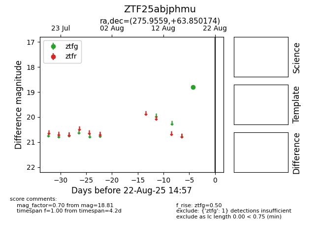

Target ZTF25abjphmu at 2025-08-22 15:31, see:
FINK: fink-portal.org/ZTF25abjphmu
Lasair: lasair-ztf.lsst.ac.uk/objects/ZTF25abjphmu
ALeRCE: alerce.online/object/ZTF25abjphmu
alt names
ZTF25abjphmu (ztf,alerce)
coordinates:
equatorial (ra, dec) = (275.9559,+63.85017)
galactic (l, b) = (93.4768,+27.15876)
photometry
last ztfg=18.81
1 ztfg detections
